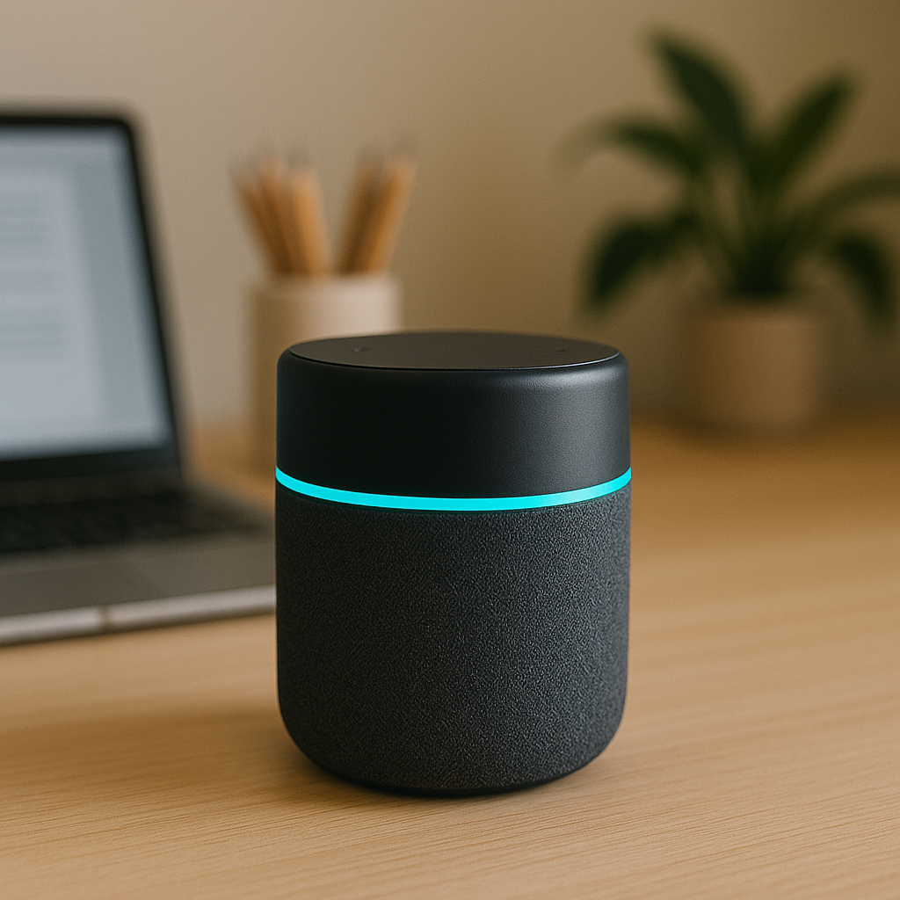

Apresentação
O UCB - Inovações Smart Assistant é uma solução de inteligência artificial criada para otimizar o dia a dia das pessoas, integrando comandos de voz, automação residencial e controle de dispositivos inteligentes.
Com um simples comando de voz, você pode controlar luzes, ajustar o ar-condicionado e gerenciar sistemas de segurança de forma rápida e eficiente.
Além disso, o Smart Assistant ajuda a organizar tarefas e gerenciar rotinas, proporcionando mais praticidade e conforto no seu dia a dia.
O que dizem sobre nós
"O UCB - Inovações Smart Assistant revolucionou a forma como gerencio minha casa. A integração de voz com as luzes e o ar-condicionado é simplesmente fantástica."
"Desde que instalei o Smart Assistant, minhas rotinas diárias ficaram muito mais práticas. Adoro como ele organiza minhas tarefas e me lembra dos compromissos."
"A capacidade de controlar sistemas de segurança por voz me deixou mais tranquilo. O UCB Smart Assistant é seguro e fácil de usar."
Recursos
Como configurar
- Conecte o dispositivo UCB Smart Assistant à energia.
- Baixe e instale o aplicativo UCB Smart Assistant no seu smartphone.
- Abra o app e faça login com sua conta UCBInovações.
- Siga o assistente de configuração para conectar à rede Wi-Fi.
- Permita acesso ao microfone para comandos de voz.
- Vincule seus dispositivos inteligentes à central UCB via aplicativo.
Funcionalidades
- Controle por voz de luzes, ar-condicionado e sistemas de segurança.
- Automação de rotinas e agendamento de tarefas.
- Gerenciamento centralizado de dispositivos IoT.
- Integração com assistentes de voz populares.
- Notificações e alertas personalizáveis.
Especificações Técnicas
- Processador
- Quad-core 1.8 GHz
- Memória RAM
- 2 GB
- Armazenamento
- 8 GB
- Conectividade
- Wi-Fi dual-band, Bluetooth 5.0
- Compatibilidade
- iOS 12+ e Android 8.0+
Comparação de Modelos
| Modelo | Preço | Características | Disponibilidade |
|---|---|---|---|
| Smart Assistant Basic | R$ 499,00 | Comandos de voz básicos, integração Wi-Fi | Em estoque |
| Smart Assistant Pro | R$ 799,00 | Automação avançada, Bluetooth 5.0, 2 GB RAM | Disponível para pré-venda |
| Smart Assistant Premium | R$ 1.099,00 | Suporte a múltiplos usuários, 8 GB armazenamento | Esgotado |
Mídia
Contato
Para mais informações, visite nosso site oficial da UCBInovações.